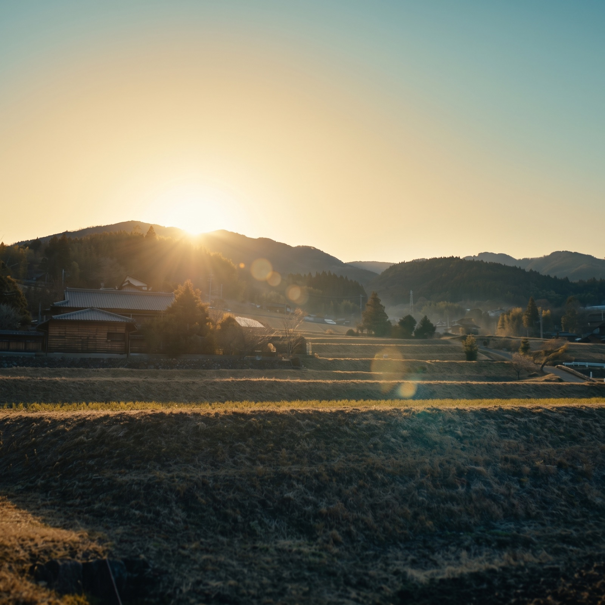

所有者の安心
相続、管理、境界、これからの選択肢を整理します。

ABOUT US
WHY WE DO THIS
山や里山は、所有者にとって管理の負担になり、地域にとっては手入れする人が足りない場所になっています。一方で都市には、自然と関わり、地域とともに価値を育てたい企業や人がいます。
私たちは、その間をつなぎます。土地の権利や管理の状況を整え、地域で実行できる人と仕組みをつくり、企業や参加者が関われる場へと育てていく。お金を地域へ送るだけでなく、山を手入れする仕事と、続いていく関係を地域に残すこと。それが、私たちの考える自然資本です。

WHAT WE CONNECT
相続、管理、境界、これからの選択肢を整理します。
森林組合・林業事業体など、現場で手入れを担う人の存在を重視します。
自然と地域に関わる機会を、無理のない形でつくります。
OUR BACKGROUND
ネイチャーキャピタル・リアルエステイトは、日本GXグループのGX実装に関する知見を背景に生まれた事業です。
日本GXグループは、環境価値の創出・可視化・社会実装を、カーボンクレジット、GXアドバイザリー、地域GX、行動変容、データ基盤を通じて支援しています。私たちは、その視点を森林・里山という現場に接続し、地域の自然資産が持つ可能性を、実行できる仕組みへ変えていきます。
日本GXグループについて ↗OUR SERVICES
01
FOR FOREST OWNERS
森林・里山を所有する方、相続を予定する方のための相談窓口です。売却を前提にせず、現在の状況と選択肢を整理します。
相談について見る →02
FOR FORESTRY ORGANIZATIONS
森林組合・林業事業体などの計画づくりを支える、オープンソースの支援ツールです。必要な情報を構造化し、現場の実務を支えます。
提供準備中OUR PROMISE
権利と管理の状況から確認する
地域で実際に手入れできる体制を重視する
自然資本価値や認証を安易に約束しない
地域に仕事と担い手が残ることを大切にする